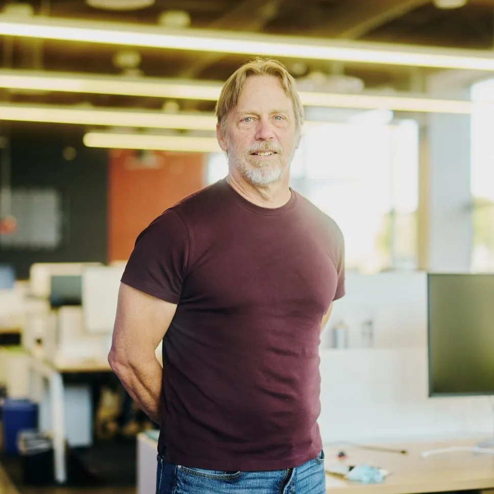
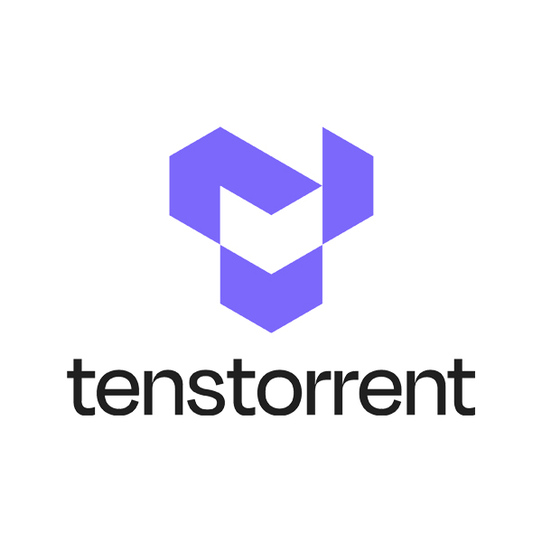
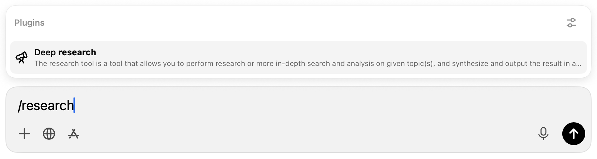
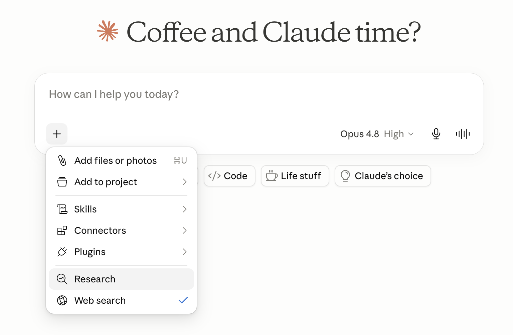
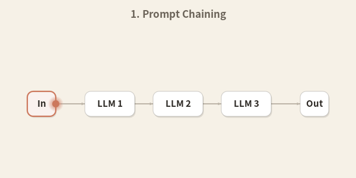
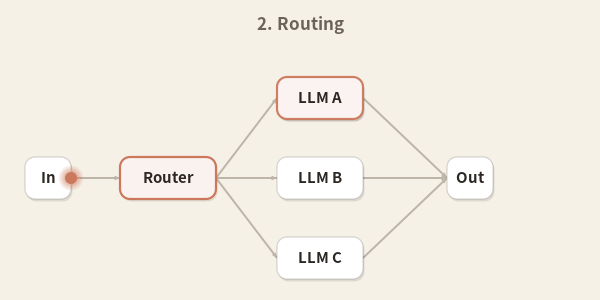
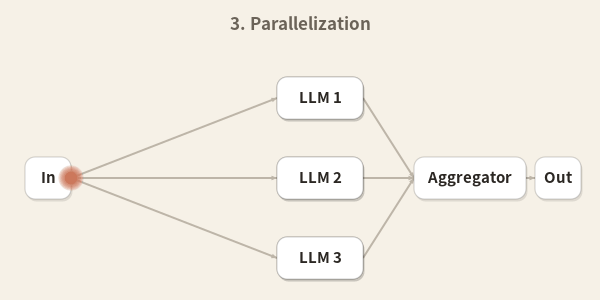
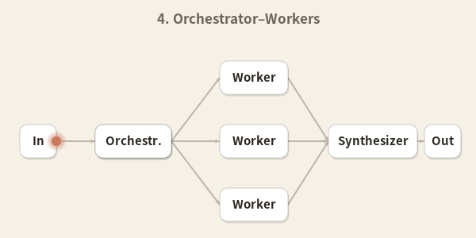
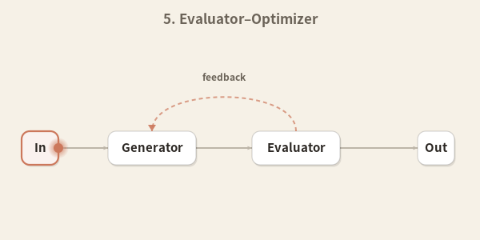
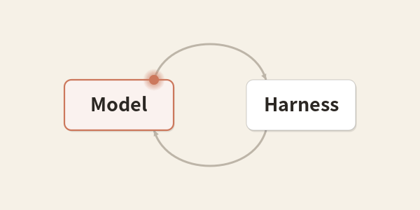

AI 툴 중에 가장 좋은건 이다
발표 슬램슬램
2026.06.21
-
로컬 LLM
-
피지컬 AI
-
AI 반도체
-
로보틱스 & SLAM
-
컴퓨터 비전 AI


AI 툴 중에 가장 좋은건 딥리서치다







Agent = Model + Harness
방법 1: 내가 더 좋은 모델이 된다
Agent = Model + Harness
방법 2: 내가 더 좋은 하네스가 된다
문제: 내가 풀려고 하는 문제를 정확히 알아야함. 어떤 툴과 워크플로우를 써야하는지 알아야함
어떤 방법을 써야하는가?

-
HBM vs GDDR vs LPDDR
-
PCIe vs UCIe vs BoW
-
Mac Mini의 메모리 구조와 LLM 추론 성능 한계 분석
-
DGX SPARK vs Apple Mac 메모리 아키텍처 비교
-
NVIDIA vs AMD GPU 아키텍처
-
Groq의 SRAM 기반 아키텍처가 NVIDIA 보다 10배 빠른 이유
-
퓨리오사 & 리벨리온 NPU 아키텍처
-
vLLM vs SGLang - 서빙 방식 및 attention 구현체의 복잡도 분석
-
Systolic array 기반의 dense transformer 연산 방법론 분석
-
FPGA 공부 로드맵